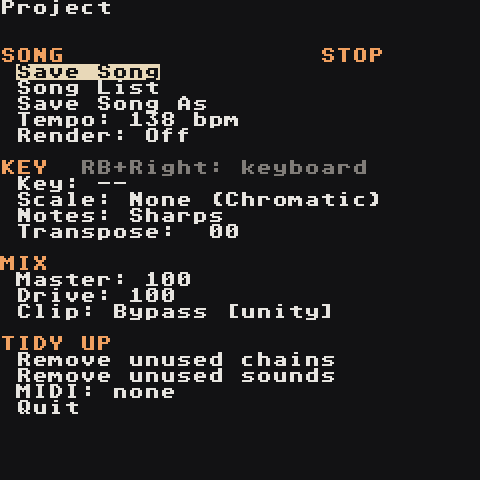

Export
Bounce your song to WAV on the device.

- Song screen → RB + Up to open Project.
- Move to
Render:and set it with A + Left/Right: -Stereo→ one file,mixdown.wav-Stems→ one file per track,channel0.wav…channel7.wav - Press Start. The song plays and records in real time.
- Press Start again to stop and close the file.
- Set
Render:back toOfffor normal playing.
The files land in the song's folder: Applications/Tracks/lgpt_<name>/.
Tips
- Stems are recorded before the shared reverb and echo; the stereo mix includes them.
- To get a clean loop, stop exactly at the end of the song, or trim the WAV on a computer.
- If the export sounds squashed or distorted, lower
Driveon the Project screen or the instrument volumes, and watch the Mixer.Clip: Subtlesoftly catches the occasional peak.